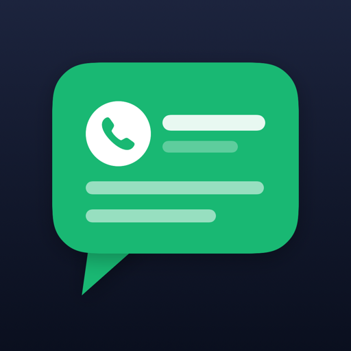

Zásady ochrany súkromia
Aplikácia Poznámka k číslu pre iPhone
Stručne
Aplikácia nezbiera žiadne osobné údaje. Nemá žiadny server, neobsahuje reklamy ani analytiku a nič nezdieľa s tretími stranami. S inými ľuďmi sa zdieľa len to, čo sám pridáš do skupiny.
Aké údaje aplikácia ukladá
Telefónne čísla, poznámky, hodnotenia, štítky, pripomienky, fotky, dokumenty a hlasové nahrávky, ktoré do aplikácie sám zadáš. Tieto údaje sú uložené:
- v tvojom zariadení,
- textové údaje (čísla, poznámky, hodnotenia, štítky, pripomienky) aj v tvojom súkromnom úložisku iCloud, aby sa obnovili po výmene iPhonu. Prístup k nim máš len ty cez svoje Apple ID.
Fotky, dokumenty a hlasové nahrávky zostávajú iba v zariadení.
Skupina
Ak si vytvoríš skupinu alebo sa k nej pripojíš cez pozvánku, čísla, ktoré do nej pridáš (meno, hodnotenie, štítky a text poznámok), sa cez iCloud zdieľajú s pozvanými ľuďmi. Vidia ich len členovia skupiny, autor aplikácie k nim nemá prístup. Fotky, nahrávky a pripomienky sa nezdieľajú. Ostatné čísla zostávajú súkromné.
Identifikácia hovorov
Aby sa poznámka zobrazila pri prichádzajúcom hovore, aplikácia odovzdá zoznam tvojich čísel a poznámok systému iOS (funkcia Blokovanie a identifikácia hovorov). Tento zoznam zostáva v zariadení. Aplikácia nemá prístup k histórii hovorov ani k obsahu hovorov.
Povolenia
- Mikrofón a rozpoznávanie reči – len keď ťukneš na nahrávanie hlasovej poznámky. Prepis prebieha v zariadení, ak to iOS umožňuje.
- Kontakty – nepovinné, iba na upozornenie, že číslo už máš v Kontaktoch (vtedy sa poznámka pri hovore nezobrazí). Kontakty sa nikam neukladajú ani neodosielajú.
- Fotky – iba fotky, ktoré sám vyberieš.
- Hlásenia – iba pre pripomienky „zavolať späť“, ktoré si nastavíš.
Vymazanie údajov
Čísla a poznámky vymažeš priamo v aplikácii. Odinštalovaním aplikácie sa vymažú údaje v zariadení; kópiu v iCloude odstrániš v Nastaveniach → [tvoje meno] → iCloud → Spravovať úložisko.
Kontakt
Otázky k ochrane súkromia pošli na kralmilos@gmail.com.
Platné od 26. 10. 2026.